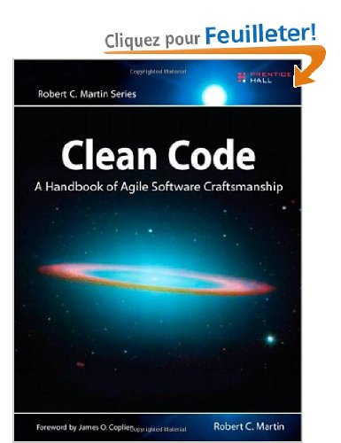
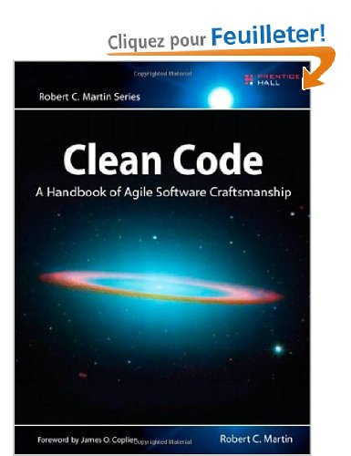

Coding Dojo ?
- C'est quoi ?
- Lieu d'apprentissage
- Pour quoi faire ?
- Terminer l'exercice
- Compétition
- S'améliorer en développement
- APPRENDRE !
- Terrain d'entrainement
- Pression
- Error is ok
Organisation
- Pair Programming
- TDD :
- Baby steps
- Sujet : Refactoring sur du code Legacy
- Un exercice facile à appréhender, plusieurs solutions possibles
Planning du dojo
- Une itération de tests (25min.)
- Rétro. (10min.)
- Itération Refactoring (20min.)
- Rétro. (10min.)
- Itération Refactoring (20min.)
- Rétro. (10min.)
- Itération Refactoring (10min.)
- Rétro. & Conclusion (10min.)
Installation
- Environnement : Eclipse ou pour changer IntelliJ
- Le Code
- Pour les tests :
- Junit
-
AssertJ (librairie d'assertions, fork de
FestAssert)
- Eclemma (plugin couverture de code sous Eclipse)
-
InfiniTest (plugin IntelliJ/Eclipse pour lancer les tests
unitaires automatiquement à chaque changement)
-
MoreUnit (plugin IntelliJ/Eclipse pour améliorer
l'intégration de ses tests unitaires dans l'IDE)
Kata !!!
-
Whatever luck I had, I made. I was never a natural athlete, but I paid my dues in sweat and
concentration and took the time necessary to learn Karate and become World Champion.
-
Chuck Norris (American martial artist and actor. Also, the only man who has counted to infinity.
Twice.)
Les règles du Kata
Vous tenez un magasin d'items :
-
Tous les items ont une date de péremption (sellIn) qui défini le nombre de jours restants pour vendre
l'objet.
- Chaque item a une valeur de qualité qui indique son prix.
- A la fin de chaque jour, le système doit baisser ces deux valeurs.
Encore des règles...
- Quand la date de péremption est passée, la qualité se degrade deux fois plus vite.
- La qualité d'un item ne peut pas être négative.
- La qualité d'un item ne peut pas dépasser 50.
- Pour le "Aged Brie" : Contrairement aux autres items, plus le temps passe plus sa qualité augmente.
- "Sulfuras" étant un item légendaire, n'a pas de date de péremption et ne perd pas en qualité.
Encore des règles...
-
"Backstage passes", comme "aged brie", augmente en qualité quand sa valeur de péremption approche;
Ainsi qualité augmente de 2 quand il reste 10 jours ou moins, et augmente de 3 quand il reste 5 jours ou
moins. Par contre elle tombe à 0 quand la date est passée.
-
Demande d'évolution :
Vous venez de trouver un nouveau fournisseur d'item maudits :
Il fournit les mêmes items mais ils se dégradent deux fois plus vite. Il faut donc mettre à jour le système
pour prendre cela en compte.
Règles sur le code
- Pas le droit de toucher à la classe Item
-
Uniquement refactorer la méthode updateQuality de la classe GildedRose
- Tout le reste est autorisé, soyez imaginatif
First steps
- Implémenter les tests
- Les tests c'est pour ceux qui ne savent pas coder

A vos marques, prêts ? Testez ! (25 min)
Rétro (10 min)
- Difficultés rencontrées
- Couverture de tests
- Tester != coder
A vos marques, prêts ? Refactorez ! (20 min)
Refactor tips
- Dupliquer le code pour mieux refactorer : débusquer la duplication
- Apprenez à utiliser votre IDE
- Extract, extract, extract
Et ca refactore encore (20 min)
Un dernier pour la route (10 min)
Rétro du Kata (10 min)
- Tour de table : avancement, solutions, difficultés, ressenti
- 1 exercice : 5 solutions différentes
- Pair programming ?
- Toujours peur du legacy ?
Rétro du Dojo (10 min)
- What went well ?
- What could be improved ?
- Actions
- ROTI

 
